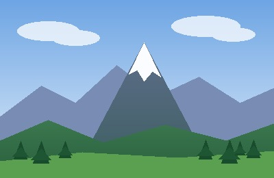
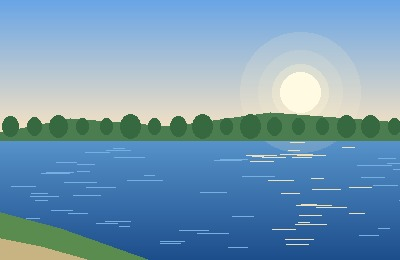
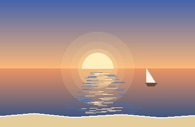

Україна − велика європейська країна з гарною природою та багатою історією. Тут є високі гори, широкі річки, старовинні міста і тепле море. Нижче кілька фото улюблених куточків нашої країни. Наведіть курсор на фото, щоб прочитати коротку інформацію про цю місцевість.
|
 Карпати |
 Річка Дніпро |
|
Софійський собор у Києві |
 Чорне море |
Собко Ігор, група 301-ТН